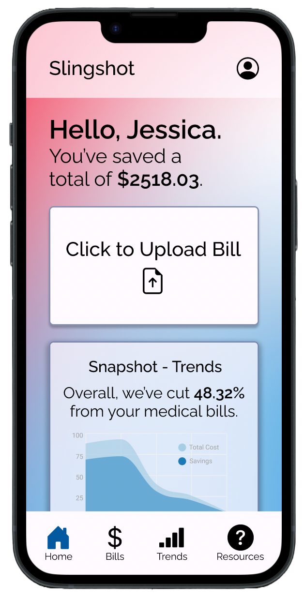
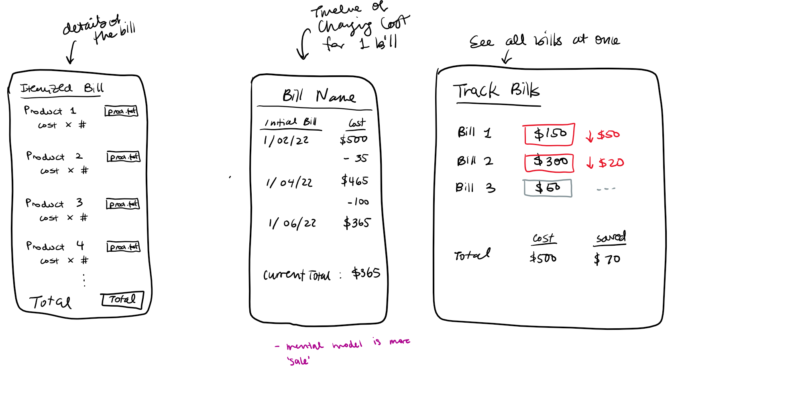
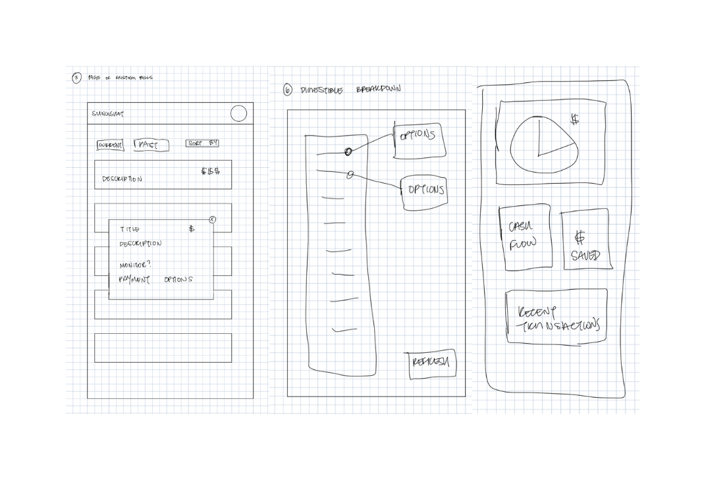
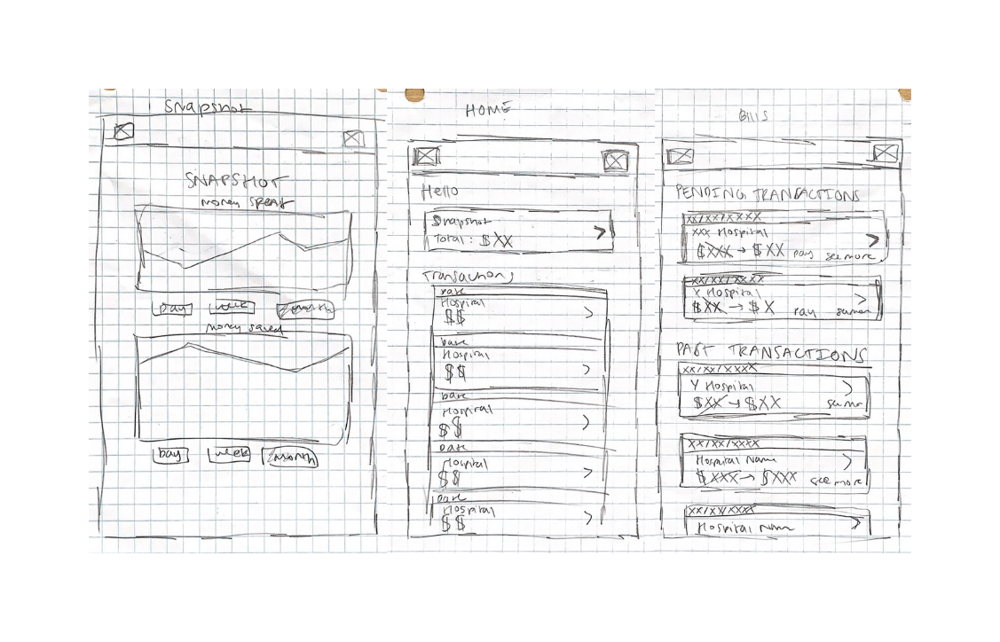
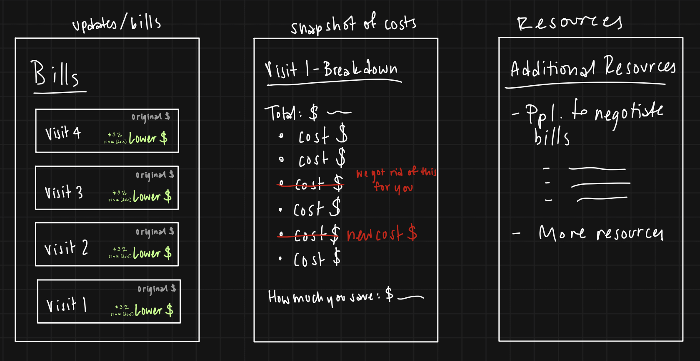

A group exercise in designing an interactive interface for an emerging startup.

The Startup
Our Project
For this project, we chose to design a mobile interface for Slingshot, a YC startup that utilizes software that automatically monitors and reduces people's medical bills.
The Product
With Slingshot, users can sign up and connect their insurance. The software will then begin to automatically monitor all claims processed by the user’s insurance and will notify the user when they are being overcharged for errors, up-codes, uncovered costs, and negotiable items. From these notifications, users have the option of enabling Slingshot to correct and lower their medical bills. Users can also upload medical bills directly and opt in for automatic insurance claim monitoring.
Sketches & Wireframes
Pre-Design Thinking
We decided to focus on the direct user interactions of Slingshot, where users easily access information on their medical bill savings. As a result, we decided to create a mobile interface for Slingshot, since mobile interfaces are accessible to any smartphone user, for easy, everyday use, and they allow for real-time state monitoring through push notifications.
Because Slingshot is focused around consumer health services, there's a wide range of potential users who would be impacted by our interface:
Financially stable people with insurance (either through employment or personal payment)
People who are financially stable often can afford receiving regular medical check-ups when ill, which can be hard to keep up with when the frequency of bills received increases. This demographic could be positively impacted by our prototype in that having a mobile interface for the Slingshot software would make checking for extraneous costs on a large batch of bills received much easier to catch and manage accordingly.
People who can generally afford care but may be tipped over by a particularly financially strenuous bill would also be positively affected, since having both the Slingshot software and the availability of that software on an easily accessible device like mobile would help to mitigate the adverse effects certain medical bills may have on a user.
Under-served, uninsured populations
People like those experiencing poverty, houselessness, disability, chronic illness(es), mental illness(es), etc. would benefit from such a service and interface, as our prototype would provide these users the option of both the technical details of their cost breakdowns and savings, as well as additional information and resources for them to access, all in one application. For those who wouldn’t have a mobile device to access our prototype from would at least be able to access the information Slingshot would provide through any device supporting the receiving of and access to emails.
People who turn to healthcare services as a last resort or in emergency situations would also benefit from a mobile interface for Slingshot, considering ER bills can be extremely costly and oftentimes more damaging than the medical incident itself. With both the ease of access through a mobile application and the Slingshot software available through that interface, these users would be able to easily view detailed descriptions of what they were charged for like they would from an itemized bill, while simultaneously being able to account for and reduce those charges.
Sketches
We began our iterative design process by having each member create rough sketches for 3 different screens. We didn’t specify what those screens would entail, as we wanted to get an idea of what type of screens each member thought would be the most essential for the prototype. Though some of us had screens that overlapped, we felt that our design concepts overall were substantially different enough to include them in our final sketches. You can find each of our sketches below:




Wireframes
After we finished our rough sketches, we incorporated our sketches (overlapping and separate) with additional features we felt were also relevant to Slingshot’s mission into one set of wireframes with 4 different screens: a “Home” page, a “Bills” page, a “Trends” page, and a “Resources” page. You can find our lo-fi prototype here.
Mockups
After creating our wireframes, we implemented them into a more polished, Hi-Fi prototype through Figma. In this prototype, we also added a few features not included in our original Lo-Fi design (such as the 'Click to Upload Bill' button on the "Home" page) and included significantly more detail for realistic interactions users would be engaging with.
We presented this prototype to a critique session with other students in the CSCI1300 course. The main critiques we received regarded:
Lack of User Control and Freedom: Missing “back” functionality on nested pages and “escape” options from drop-down menus made it inconvenient for users to navigate through pages
Ineffective Aspects of our Design System: The use of transparency for both cards and buttons takes away from the “Call-to-Action” nature of the buttons.
Disrupting User Mental Models: Returning to the “Home” page violated users’ expectations of having an animation that was not distinguishable from the animations of leaving the “Home” page (both actions caused pages to come in from the right).
Overlooking Visibility: The subpage tabs displayed on the “Trends” and “Resources” headers were difficult to read, as they required that users scroll horizontally to be able to view all of the offered subpages.
Once we received our critiques, we further iterated on our design by implementing fixes based on the suggestions offered by our fellow CSCI1300 students. We addressed each main critique in our final, Hi-Fi prototype:
Improving User Control and Freedom: We implemented “back” functionality on nested pages as seen in our “Bills” page, which consisted of the most nested interactions of our prototype, using “back” buttons. We also implemented “back” functionality for the drop-down menus in which they would return to their closed state when users would click on any part of the screen outside of the menus.
Improve Upon our Design System: We assigned opaque colors to buttons like “Click to Upload Bills” on the “Home” page and drop-down menus on the “Bills” and “Trends” page, while only using transparent colors for cards.
Aligning with User Mental Models: We added an animation for returning to the “Home” page (page comes in from the left) that was the opposite of the animations used for leaving the “Home” page to align with the idea that returning to a page is the opposite of leaving a page.
Accounting for Visibility: We removed the scrolling feature and reduced the size of the subpage tab names on both the “Trends” and “Resources pages so users would be able to view all of the subpages offered in one place.
You can find and interact with our final prototype here.
User Testing
After finalizing our hi-fi prototype, we sent the prototype to a remote user testing service to gather feedback and data on our design from random users.
Task
For users to test our prototype, we needed to create a specific task for them to accomplish. We decided on the following:
"Find the cost breakdown of how much you saved in “Physician Services” on your most recently completed bill from RI Hospital."
To complete this task, we broke down a user’s required actions into 4 subtasks:
Navigate to the "Bills" page.
Click on the “Sort and Filter” dropdown button to sort the “Completed” bills by “Most Recent.”
Find the most recently completed bill from RI Hospital.
Click on “Emergency Visit, Level 4” under “Physician Services” to see the cost breakdown of what you saved.
With our submission of the prototype to the UserTesting site, we included the following directions for the user to keep in mind:
"Imagine you are a company employee stressed about medical bills from your emergency room visit in September. You want to check if that medical bill has reduced in cost through the Slingshot app on your phone.
Your task is to find the cost breakdown of how much you saved in “Physician Services” on your most recently completed bill from RI Hospital.
You are encouraged to think aloud as you perform the task so we can better understand your thought process while navigating the site! Please note that this is an interactive mock-up and not an actual mobile application. Some screens (e.g. the Spendings tab in the Trends page) were not actually created or are unreachable through the mock-up."
We also included the following post-test questionnaire:
How would you describe your overall experience with the prototype?
What, if anything, surprised you about the experience?
What, if anything, made you frustrated about the app?
What are your thoughts on the design, color, and/or layout?
Results
We had a total of 3 users test our Hi-Fi prototype, with their results and answers to our post-test questionnaire included below:
How would you describe your overall experience with the prototype?
"It was very easy to understand and utilize."
What, if anything, surprised you about the experience?
"Nothing it was very clear cut."
What, if anything, made you frustrated about the app?
"My own confusion made me frustrated."
What are your thoughts on the design, color, and/or layout?
"It looks like a normal doctor app with normal colors."
Analysis
Finally, we analyzed each user testing video by breaking down the subtasks, the errors users had made, overall user performance with the prototype, and iterations we would make for our prototype based on these results:
Subtasks the user had to accomplish
The subtasks consisted of navigating from the homepage to the “Bills” page, sorting the “Complete” bills by “Most Recent”, and clicking on the most recent bill from RI Hospital to view how much was saved under the “Physician Services” portion of the bill.
Errors the user made
The user tried to click multiple times through the Sort and Filter → Sort By → Most Recent dropdown, and that caused difficulties in the prototype. This made the user restart from the beginning of the flow at the home page in order to continue.
User's general performance
Generally they did well on the tasks. They quickly (almost immediately) found the action element and acted upon that element in a confident and intuitive way. They voiced their ease of use, and excitement in the potential of the app, as they have a background in medicine.
Potential interface changes based on the user's experience
We can change the ‘Sort and Filter’ button to two separate buttons: one for ‘Filter’ and one for ‘Sort’.
Subtasks the user had to accomplish
The subtasks consisted of navigating from the homepage to the “Bills” page, sorting the “Complete” bills by “Most Recent”, and clicking on the most recent bill from RI Hospital to view how much was saved under the “Physician Services” portion of the bill.
Errors the user made
The only error that the user made was misclicking the wrong section of the dropdown, but they fixed this error quickly and they were able to navigate the rest of the dropdown options menus that popped up.
User's general performance
Generally, they did very well on the tasks and navigated everything with quick ease. From their thought process, the user had a very thorough understanding of the task, the layout, and the navigation of our prototype. Specifically, they said that navigating and finding information was “very straightforward” and what they were looking for was easy to find and in “one of the first places [they] looked.” The task that took the longest was opening the dropdown menu to Sort and Filter, but that was because they clicked on the wrong section.
Potential interface changes based on the user's experience
Based on the results and feedback, an interface change we would make is to specify the numerical values on the cards that have the original price to the decreased price. The user said that it was not clear if the second number was what the cost was reduced by or if it was what the cost was reduced to. This could be made more clear with a net info button or just more text that explains the meaning of the numbers.
Subtasks the user had to accomplish
The subtasks consisted of navigating from the homepage to the “Bills” page, sorting the “Complete” bills by “Most Recent”, and clicking on the most recent bill from RI Hospital to view how much was saved under the “Physician Services” portion of the bill.
Errors the user made
One error that the user made was that they accidentally clicked on the “Trend” icon button on the footer instead of the “Bills” icon from the homepage in subtask 1, so they got confused by the following action directed in subtask 2, which was interacting with a feature only presented on the “Bills” page. The user ended up having to navigate back to the homepage from “Trends” through the footer and was able to successfully get to the “Bills” page the second time.
Once they got to the “Bills” page, they made the mistake of clicking the “Pending” “Sort and filter” dropdown button as opposed to the directed “Complete” “Sort and filter” dropdown button in subtask 2, which could have just been a matter of misreading or forgetting the task directions.
Lastly, the user had difficulties getting from subtask 3 to 4 and navigated between “Bills” and the homepage until they were able to successfully complete subtask 4 by completing a step that was not specified in subtask 3, which only directed the user to locate the most recent bill from RI Hospital. By clicking on that bill, the user was able to get to the nested page that eventually allowed them to complete subtask 4. This error was not necessarily on the user’s part, but ours.
User's general performance
Overall, they did very well on both understanding and completed the assigned subtasks, although subtask 1 and 4 took the longest for them to complete due to the errors discussed above. One thing that stood out to me was our lack of clarification on subtask 3, which did not specify for the user to actually click on the bill that we wanted them to interact with. That led to quite a bit of confusion for the user, which could have been avoided by specifying that we wanted the user to both locate and interact with the bill button. For all of the assigned tasks, however, the user stated that they were able to successfully complete each one, rating 2/4 tasks with a 4 and the rest with a 5.
Potential interface changes based on the user's experience
Based off of the results from this UserTesting video, some potential interface changes I would make would include finding a way to organize or space the footer icons out in a way that would help reduce the chances of a user clicking on an icon they did not intend to interact with, as well as making the header titles more noticeable and attention-grabbing so users can easily deduce where they are in the application.
Overarching Conclusions & Next Steps
All users had a general sense of confidence and navigated with ease. Any errors they came across, they were eventually able to resolve with some exploration.
Based on all the users' feedback and their testing videos, here is what we'd improve upon in future iterations of this prototype:
Information Clarity
Specify exactly what the numerical price values on the cards mean
Organization
Space footer icons out such that the chances of a user clicking on an icon they did not intend to interact with would be reduced
Make the header titles more noticeable and attention-grabbing so users can easily deduce where they are in the app
Mental Models
Change the ‘Sort and Filter’ button into two separate buttons: one for ‘Filter’ and one for ‘Sort’ to better align with user expectations
User Populations
More research will need to be done to further address the needs of those that are in situations where their smartphone use is dependent on aspects like accessibility, financial situation, housing status, or any other factor (what unique issues do they face that we have not designed for in our app?)